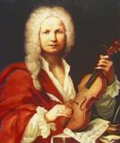

|  |
Vivaldi, barok çağının en büyük kemancı ve bestecilerinden biri, 4 Mart 1678'de Venedik'te doğdu. Babası St. Mark kilisesinin orkestrasında çalan usta bir kemancıydı. Vivaldi henüz kendi eserleriyle ün kazanmadan önce babasıyla birlikte ikili keman konserleri verdi ve bu konserler tanınmasında da büyük ölçüde etkili oldu.